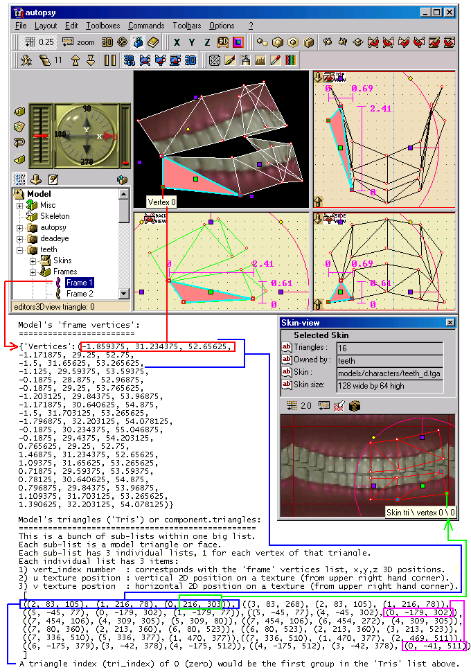
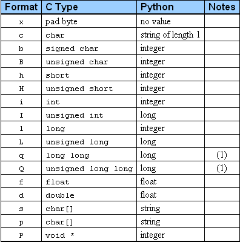
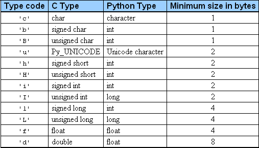
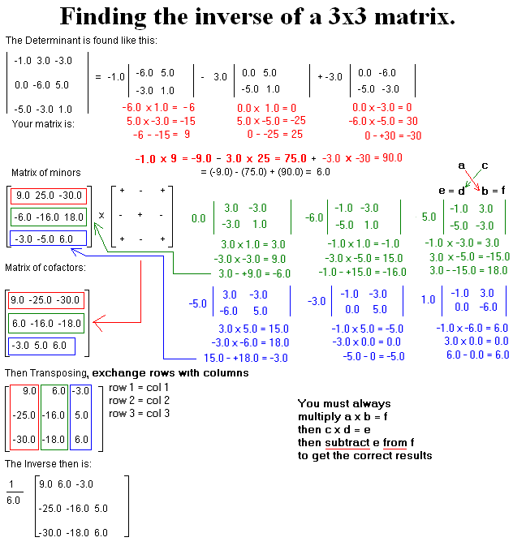

How to Write Model Importers & Exporters
Updated 25 May 2011
- QuArK Information Base
- 1. Introduction to QuArK
- 1.6. Model-editor in QuArK
|
|
How to Write Model Importers & Exporters
Updated 25 May 2011
|
Upper levels: - QuArK Information Base - 1. Introduction to QuArK - 1.6. Model-editor in QuArK |
|
1.6.3. How to Write Model Importers & Exporters |
[ - - ] |
The QuArK's Model Structure section covers more of the technical part, in detail, of QuArK's Model Structure for programming purposes and is very important to understand if you plan to do any code writing for the Model Editor. This section is dedicated to the structure of a QuArK Internal Object that makes up a model component and how to create it when writing a Model Importer and Exporter plugins file. Occasionally references will be made to the Model Editor's Python code located in the quarkpy and plugins folders as well as areas in the 'QuarkX' section of these Infobase docs. It is highly recommended that you at least read the Components of a Model section before going on with this section to get a good understanding and visualization of a model component's structure since that is what an importer will be creating and an exporter will be writing the model file from. Although highly technical in understanding a components structure and Python coding, writing a QuArK Model Importer and Exporter is truly a rewarding learning experience. These sections are designed to help you gain that experience with a little effort, time and perseverance. We look forward to seeing your results. |
|
Index |
|
What Makes Up a Model Component |
cdunde - 27 Jul 2009 | [ Top ] |
|
A model is a single QuArK Internal Object that can consist of a single or multiple components. The elements that make up a model are stored as "key : value" pairs of the QuArK Internal Object, where there is a key name and a value that goes along with that key name. Also, each of the "key names" CAN BE given a specific type to distinguish what kind of element it is. {'teeth:mc': <QuArK Internal object at 0x00CC1E4C>}The key name is teeth, its type mc (model component) and its value is another QuArK Internal Object
containing its subitems, dictspec items and dictitems. subitems : This is a list of QuArK Internal Objects that make up a component and controls the order
that they are displayed in the editor's tree-view. A Skeleton group (its bones if any) is created outside of,and shaired by, the components. This group is covered in detail further below. The creation of the subitems list is not something you need to be concerned about when writing an
importer or exporter file. dictitems : These are other dictionary items within the component that make it up, they are the same items as its subitems and each one is a key : value pair that an importer file will use to create a QuArK editor component, for example:
{
'SDO:sdo':
dictspec items : These are key : value item pairs that pertain to the component and
its subitems as a whole and are only QuArK editor related. dictspec items of a frame : {'Vertices': (-1.859375, 31.234375, ...(a bunch more), 54.078125)}So there you have it, the breakdown of a component...which can be a bit bewildering at first, but just remember, Now for their relationship between one another in making up a QuArK model component in a model importer file
and used for the exporter file as well. All of these files are in the QuArK\plugins folder and are
written in Python, look at ie_md2_import.py as a guide. Also, all of them MUST start with ie_ for their name. As we go through each item of a component, its title is shown the same way it would be written in Python code to gain access to it in an importer or exporter file. 
Component.dictitems['Frames:fg'].dictspec : Component.dictitems['Frames:fg'].dictitems :
These are individual dictionary items, one for each frame in the frame group, for example: Even though this is a continuous list, QuArK knows to brake them up into groups of three (x,y,z) for each vertex. So all of a frames vertexes make up the points in 3D space that give the model mesh its shape. And it takes three of these vertexes to make a single face of the mesh, even though most vertexes are what we call common vertexes, meaning that they are shared with other faces of the mesh. That's what holds a mesh together as one complete unit. Other wise you could pull it apart into individual faces or pieces...not a good thing.
If a model has more then one frame, these vertex positions change from frame to frame, thus creating its
animation movement, but that can also be handled using other files and methods from one model format to another. Even though the frame vertexes provide the mesh's 3D points in space, the lines between those points (or vertexes) still need to be drawn and a working relationship between them still needs to be connected from one to the other and the other... to create a completed and joined mesh. That is done by the Component.dictspec{'Tris'] item. Component.dictspec{'Tris'] So the first triangle (tri_index) in the list would be:
Component.dictspec['Tris'][0]
its first vertex: Component.dictspec['Tris'][0][0] Also notice how each vert_index (vertex) can have more then one U,V texture position
(indicated by the green and fusha lines). ================================================ Footnotes ================================================== footnote 1: Model Animation Methods |
|
Writing QuArK Elements into the Code |
cdunde - 09 Dec 2008 | [ Top ] |
|
First off, a little bit of encouragement. When I first started developing for QuArK I knew absolutely nothing about Python code writing, not to mention C or C++ as well. So if you know anything about these languages at all, you are far ahead from where I started. And Python is one of the easiest languages for you to learn. To begin with, there a numbers of ways to get started. You can look for model importer\exporter files that
someone else has already written to go by as a guide The example that I am going to be working from is the Quake 2 .md2 model importer file named ie_md2_import.py which is located in your QuArK\plugins folder, so you should open that file now with any text editor as well. We won't be covering everything in that file, just certain points as needed.
File Header :
#$Header: /cvsroot/quark/infobase/intro/modeleditor/importexport/codeelements.txt,v 1.2 2008/12/10 03:02:36 cdunde Exp $
Info = {
"plug-in": "ie_md2_importer",
"desc": "This script imports a Quake 2 file (MD2), textures, and animations into QuArK for editing.
Original code from Blender, md2_import.py, author - Bob Holcomb.",
"date": "June 3 2008",
"author": "cdunde & DanielPharos",
"author e-mail": "cdunde@sbcglobal.net",
"quark": "Version 6.6.0 Beta 2" }
# ----------- REVISION HISTORY ------------ # # $Log: codeelements.txt,v $ # Revision 1.2 2008/12/10 03:02:36 cdunde # Update # # Revision 1.1 2008/07/28 22:40:28 cdunde # Update # #
File Imports : import struct, sys, os, time, operator import quarkx from types import * import ie_utils from ie_utils import tobj from quarkpy.qdictionnary import Strings
Logging Implementation : The working code for this system is in the QuArK\plugins\ie_utils.py file, where other useful functions and utilities should be added that strictly relate to the importers and exporters only. Now, for adding the code, this is also shown in the QuArK\plugins\ie_utils.py file. Be sure to change the names in step (1) for exportername and textlog to your file name and type.
1) To add logging to an importer or exporter put these lines near the top, under the file header, in this order:
import os, time, operator
import ie_utils
from ie_utils import tobj
# Globals
logging = 0
exportername = "ie_md2_export.py" (or importername = "ie_md2_import.py" depending on which one you're doing)
textlog = "md2_ie_log.txt"
2) Then add needed globals and calls to start and end the logging in your main file function like this:
def save_md2(filename):
global tobj, logging, exportername, textlog ### Needed globals.
### Next line starts the logging.
### Use "EX" for exporter text, "IM" for importer text.
logging, tobj, starttime = ie_utils.default_start_logging(exportername, textlog, filename, "EX")
### Line below here saves the model (just for this example---DO NOT COPY NEXT LINE).
fill_md2(md2, component)
### Next line is optional, it adds additional text at the bottom of the default message,
### with a blank line between them. If none then just exclude it from the function arguments below.
add_to_message = "Any used skin textures that are not a .pcx\nwill need to be created to go with the model"
### Next line ends the logging.
### Use "EX" for exporter text, "IM" for importer text.
ie_utils.default_end_logging(filename, "EX", starttime, add_to_message)
3) Then in any function you want logging declair the global and call for tobj like this: (all items must be strings)
def fill_md2(md2, component):
global tobj
if logging == 1:
tobj.logcon ("#####################################################################")
tobj.logcon ("Skins group data: " + str(md2.num_skins) + " skins")
tobj.logcon ("#####################################################################")
tobj.logcon ("")
Path Checking Implementation : For example, say you have the game setup for Quake 2, its full path to the actual game files folder might be C:\Program Files\Quake2\baseq2. This is where you would find the .pak files for Quake 2. If you open a couple of those you would see more folders inside them shuch as models/monsters/boss1 and finally the actual model file, tris.md2, inside that last folder. The valid path for that model would then be what is shown within the .pak file itself models/monsters/boss1 and that is all that this function is checking for. To import or export a modle these folders MUST be extracted, copied, from the .pak file to the game folder exactly the same way they are arranged in the .pak file or things may not work right later. Therefore, you can have, what I call a dummy folder, anywhere else on your drive and do the same extraction to that folder to work from, but again using their same exact folder path hierarchy. This helps to ensure that things should work fine later. If you already did the Logging Implementation above you do not need to do step (1) here.
1) To add path checking to an importer or exporter put this line near the top:
import ie_utils
2) Call for the path check like this:
def loadmodel(root, filename, gamename, nomessage=0):
### First we test for a valid (proper) model path.
basepath = ie_utils.validpath(filename)
if basepath is None:
return
|
|
Writing the Start Function of the Code |
cdunde - 25 May 2011 | [ Top ] |
|
Now is a good time to bring up some general code writing points that apply to Python and probably some other programming languages as well. Basically speaking, you do not always start at the top of your file and work your way down, but the other way around, from the bottom to the top. As far as Python goes, there are two general types of code writing, classes, which we will cover later, and standard functions. classes can pretty much be placed anywhere in your file that you wish. That is because they have their own functions written within them, which makes them more placement independent and a broader type of operation handling item. While standard functions must be placed above any other functions that use them, or things just won't happen, except for some error messages. When you start writing your file you really don't know all the functions that you might need until you reach a point where you half to create some, at which case you'll want to always place them above the one(s) that will be using them so that they get defined, or loaded, first. So with that out of the way, lets go on from where we left off. As mentioned just above and looking near the bottom of the ie_md2_import.py file you will see the def loadmodel code function. This is the starting, or entry, point into your file to perform its operation, that of importing a Quake 2 .md2 model file that can be edited in QuArK's Model Editor. The same would apply to an exporter. This is where another function will be called to actually open the .md2 model file, read it and start processing it. But before we get to that part, there are a few other things that need to be done here. so lets breakdown the things that make up this function and what they are doing first. def loadmodel(root, filename, gamename, nomessage=0): Function Description :
Globals & Imports : Next we bring in any imports that are needed, in this case the mdleditor file to define which editor we are working with. If an imported file is in another folder location then where this file will be kept, which it is, then the folder's name needs to proceed the files name, its file type .py is not required. This is so that Python can locate the file and import it, meaning its functions are available to use in this function. Most imports are done at the very top of a file, but if only one or two functions use the file then it might be imported within those functions. Other times things will not work right unless they are imported within the function, so experiment with this. global progressbar, tobj, logging, importername, textlog, Strings import quarkpy.mdleditor editor = quarkpy.mdleditor.mdleditor The Function's Body : Next comes the call to start the logging, notice how that function is returning other items. Those will be used latter in this function to stop the logging. Then comes the actual importing function import_md2_model which will be returning the Component that we will be using next to finish the importation of the model. Once the model has been imported it still needs to be dropped into the editor, that is what the undo functionundo function part of our code does. The part dealing with compframe is assigning each frame a parent or upper level. Without this process, you would not be able to relocate the order of any frames within their component. So it is vital that this code be included in every import\export file made. Next we close the progressbar since we are done with it at this point
and we make the call to end any logging that might be going on. Finally we call the editor.ok of the undo function, set the current component skin (for proper selection) and our job is done....the model should now be imported. (SUCCESS ! ...well at least once we finish.) One last point here, have you noticed how you have also been using some of the quarkx functions in your file to get the job done? You can do this if you have also written a import quarkx call at the top of your file....which you have. This demonstrates how you can use functions from all over the place to help you do the work and, as you will see soon, even Python functions and modules which are whole sections of added functions for each module.
(not all code lines are being shown here ..... represent lines left out, see the ie_md2_import.py file for those lines)
basepath = ie_utils.validpath(filename)
.....
### Use "EX" for exporter text, "IM" for importer text.
logging, tobj, starttime = ie_utils.default_start_logging(importername, textlog, filename, "IM")
.....
ModelRoot, Component = import_md2_model(editor, filename)
.....
undo = quarkx.action()
undo.put(editor.Root, Component)
editor.Root.currentcomponent = Component
compframes = editor.Root.currentcomponent.findallsubitems("", ':mf') # get all frames
for compframe in compframes:
compframe.compparent = editor.Root.currentcomponent # To allow frame relocation after editing.
progressbar.progress()
progressbar.close()
.....
ie_utils.default_end_logging(filename, "IM", starttime) ### Use "EX" for exporter text, "IM" for importer text.
editor.ok(undo, Component.shortname + " created")
comp = editor.Root.currentcomponent
skins = comp.findallsubitems("", ':sg') # Gets the skin group.
if len(skins[0].subitems) != 0:
comp.currentskin = skins[0].subitems[0] # To try and set to the correct skin.
quarkpy.mdlutils.Update_Skin_View(editor, 2) # Sends the Skin-view for updating and center the texture in the view.
else:
comp.currentskin = None
If you were also importing Bones or
BBoxes (bounding boxes)
from the model this is the second of
two places
where that code would be added now that the component has been created. Last, but not least, at the very bottom of our importer file we need to Register our starting function so that it will show up on the Files > Importer \ Exporter menus in the QuArK Model Editor. This is done outside of our function and just below it.
### To register this Python plugin and put it on the importers menu.
import quarkpy.qmdlbase
quarkpy.qmdlbase.RegisterMdlImporter(".md2 Quake2 Importer", ".md2 file", "*.md2", loadmodel)
After reading the footnote below about Progress Bars proceed on to the next section. ================================================ Footnotes ================================================== footnote 1: Progress Bars Originally the global for it could have been created near the very top of our file when we did the
Logging Implementation and Path Checking Implementation
in the previous section. But it might have been a bit
confusing to do at that time, so I waited until now to spring this on you. (Aren't I a stinker !) progressbar = None
Strings[2454] = name + "\n" + Strings[2454]
progressbar = quarkx.progressbar(2454, md2.num_faces + (md2.num_frames * 2))
progressbar.progress()
progressbar.close()
Strings[2454] = Strings[2454].replace(Component.shortname + "\n", "")
1) Import the global progressbar, 2) add the name to the default string, 3) activate (set) the progressbar, 4) advance its count, 5) close the progrssbar and 6) reset its default string. The Strings you see in the code, and also imported as a global, are all of the string (text) statements which are in the QuArK\quarkpy\qdictionnary.py file and using the number for the default setting above 2454 as a word search in that file you will find that default text string which is "Preparation data read...Exporting model". |
|
Writing the File Processing of the Code |
cdunde - 28 Jul 2008 | [ Top ] |
|
If you have completed the previous sections, you are now ready to start writing the part of the code that opens, reads
and processes a model file. The next function we need to write is import_md2_model, which is called from our previous function loadmodel passing the editor and filename to our new function. In the first part of its code you will see a section that deals with checking to see if we have already imported any
other models into the editor so that it can get a proper numbering sequence to add to the name of the component that
is currently being imported. The line of code following the above section calls another function, load_md2, which will return the various parts of data we will use in the following section of this function to create the component itself in a format that QuArK can understand and use, The Component's Format.
Tris, skinsize, skingroup, framesgroup = load_md2(md2_filename, name) # Loads the model.
And finally, at the very end, this function will return the ModelRoot and the Component back to the loadmodel function to finish the whole process by putting the model's component into the editor, using its undo section of code. Because we are working with the .md2 code, a Quake 2 model only has one component per model. If we were importing a different kind of model format it might have more then one. In which case, this whole process would continue in one big loop, in this function, until all of the model's components have been loaded, creating a list of components that would then be returned to the previous function loadmodel where each component in that list would be handled by its undo section to put them into the editor. You can find this kind of coding in the QuArK\plugins\ie_lwo_import.py file to use as a guide. Now let's go on to our next function load_md2 Code to Open & Read a Model File :
file=open(md2_filename,"rb")
It reads the entire file at one time, stores all the data into memory and then closes the file with the code file.close() a few lines down. Now we're ready to Process. But before we do that we first need to deal with our progressbar
by using that trick
to add a component's name to its text and give its settings to start it.
Code to Process the Model's Data :
skinsize, skingroup = load_textures(md2) # Calls here to make the Skins Group.
(the Tris creation code is done here)
framesgroup = animate_md2(md2) # Calls here to make the Frames Group.
return Tris, skinsize, skingroup, framesgroup
As we had covered earlier in the What Makes Up a Model Component section the Tris is a list of smaller lists, each containing a (vert_index, U, V) but in binary code. The section above creates that Tris. The lines of code are long, so I will need to split them up to demonstrate here, looking at the file may also help you. When ever you set something like this up you first need to define it (make a blank one) and since the Tris is nothing more then a long text string of data, that's what we'll make it with the first line of code. Then we write a Python loop which just runs through each face (triangle) of the component's mesh adding that data to the Tris. That's what the three lines of code are doing inside our loop, one line for each of the three vertexes of that face (triangle). Now you are seeing one of the functions (pack) of the
struct module being put to work here and that is what
the first part ("Hhh") is about. Notice how each piece of data is split up by a comma at the end, except for the last one, giving four data items per line. Also take a look at the load_textures and animate_md2 functions while you are there to see how those are written and handled as well. n them does) to
the md2 object which is created in another function in the file.
Tris = ''
for i in xrange(0, md2.num_faces):
Tris = Tris + struct.pack("Hhh", md2.faces[i].vertex_index[0], md2.tex_coords[md2.faces[i].texture_index[0]].u,
md2.tex_coords[md2.faces[i].texture_index[0]].v)
Tris = Tris + struct.pack("Hhh", md2.faces[i].vertex_index[1], md2.tex_coords[md2.faces[i].texture_index[1]].u,
md2.tex_coords[md2.faces[i].texture_index[1]].v)
Tris = Tris + struct.pack("Hhh", md2.faces[i].vertex_index[2], md2.tex_coords[md2.faces[i].texture_index[2]].u,
md2.tex_coords[md2.faces[i].texture_index[2]].v)
Once you have done that, continue on to our final step below. To write the exporter, basically it's just the reverse process. |
|
Creating a Component in the Code |
cdunde - 25 May 2011 | [ Top ] |
|
In one of our previous functions, import_md2_model, we had the data to create a component returned to that function. Here we will look at its code, which is shown below, to see exactly how that is written.
# Now we can name our component that will be imported.
Component = quarkx.newobj(name + ':mc')
Component['skinsize'] = skinsize
Component['Tris'] = Tris
Component['show'] = chr(1)
sdogroup = quarkx.newobj('SDO:sdo')
Component.appenditem(sdogroup)
Component.appenditem(skingroup)
Component.appenditem(framesgroup)
If you were also importing Bones or BBoxes (bounding boxes) from the model this is the first of two places where that code COULD be added if there is only ONE component used for the model. If there is more then one then they would need to be added at the second location as a mater of code consistency. The additional line of code should be placed just before the Component lines above and can be copied from below just as it is shown.
editor.Root.dictitems['Skeleton:bg'].appenditem(skeletongroup)
Just under the above code in the QuArK\plugins\ie_md2_import.py file you will see this code.
### Use the 'ModelRoot' below to test opening the QuArK's Model Editor with,
### needs to be qualified with main menu item.
ModelRoot = quarkx.newobj('Model:mr')
|
|
About the Python Struct Module |
cdunde - 28 Jul 2008 | [ Top ] |
|
We'll only cover a very small portion of it here, but basically the Struct Module is made up of functions to handle binary code data, converting it into standard text format and back again. A link to the entire module is here and another good part to review is the chart at the top, here, which is also shown below.
pack( fmt, v1, v2, ...)
Return a string containing the values v1, v2, ... packed according to the given format.
The arguments must match the values required by the format exactly.
unpack( fmt, string )
Unpack the string (presumably packed by pack(fmt, ...)) according to the given format.
The result is a tuple even if it contains exactly one item.
The string must contain exactly the amount of data required by the format
(len(string) must equal calcsize(fmt))
A format character may be preceded by an integral repeat count.
For example, the format string '4h' means exactly the same as 'hhhh'.
Whitespace characters between formats are ignored; a count and its format must not contain whitespace though.
calcsize( fmt )
Return the size of the struct (and hence of the string) corresponding to the given format.
For the "s" format character, the count is interpreted as the size of the string,
not a repeat count like for the other format characters;
for example, '10s' means a single 10-byte string, while '10c' means 10 characters.
("signed" means they can be positive + or negative - values, "unsigned" means they are only positive +)   |
|
Adding Bones & Their Structure |
cdunde - 25 May 2011 | [ Top ] |
{
'flags': (0,0,0,0,0,0),
'show': (1.0,),
'parent_name': 'NewBone1:bone',
'position': (-23.702332855224609, -4.4704371452331543, 2.0622565078735352),
'scale': (1.0,),
'bone_length': (0.0, 0.0, 0.0),
'component': 'h_head:mc',
'draw_offset': (0.0, 0.0, 0.0),
'_color': '\x00\xff\xff'
}
Other Items :
If a bone has vertexes assigned to it already, these items must be added to the bone itself as an attribute.
new_bone.vtxlist = { 'mesh1:mc' : [0, 18, 34, 36, 7, 8] , 'mesh2:mc' : [0, 3, 45, 88] }
new_bone.vtx_pos = {} or { 'mesh1:mc' : [0, 18, 34] } # Sets the bones custom position by those vertexes.
new_bone.rotmatrix = quarkx.matrix((1, 0, 0), (0, 1, 0), (0, 0, 1)) The new_bone.vtx_pos are specific vertex indexes (of a single component) from their respective new_bone.vtxlist. Because the values are read in from the model file being imported we can not give code here that you can just copy and paste But you should be able to get enough from the
skeletongroup = editor.Root.dictitems['Skeleton:bg'] # gets the bones group.
bones = skeletongroup.findallsubitems("", ':bone') # get all bones (because bones can have other bones inside them it MUST be called this way).
name = "NewBone1" # Can be any string item.
new_bone = quarkx.newobj(name + ":bone") # Creates the bone as a QuArK Internal Object.
new_bone['show'] = (1.0,) # Sets the bone to be drawn (displayed) in the editor, 0.0, would hide the bone.
new_bone['component'] = component.name # The component name that this handle is assigned to. # Can be any component.
new_bone['parent_name'] = "None" # Or "parent bonename:bone" if attached to another bone.
new_bone['position'] = (-23.702332855224609, -4.4704371452331543, 2.0622565078735352) # As a tuple as shown for x,y,z.
from math import sqrt
new_bone.rotmatrix = quarkx.matrix((sqrt(2)/2, -sqrt(2)/2, 0), (sqrt(2)/2, sqrt(2)/2, 0), (0, 0, 1)) # Sets the Default or other rotation matrix.
new_bone['draw_offset'] = (0.0,0.0,0.0) # Or a value can be read in here if one exist, but as a tuple as shown for x,y,z.
new_bone['scale'] = (1.0,) # Or a value can be read in here if one exist, but as a tuple as shown.
new_bone['_color'] = MapColor("BoneHandles", SS_MODEL) # Default QuArK function call.
(or)
new_bone['_color'] = str(\x80\x00\x80) # A Hex value of a color converted to a string.
new_bone['bone_length'] = (0.0,0.0,0.0) # If no other bones are attached to this one...
(or as in most cases, needs to be calculated using another bone's position)
startpoint = quarkx.vect(new_bone['position']))
endpoint = quarkx.vect(attached_bone['position']
new_bone['bone_length'] = ((startpoint - endpoint)*-1).tuple # *-1 must be used or things will come out backwards.
vtxlist = {}
list = []
for vtx in vertexes: # "list" being assigned vertex indexes you read in (by component) from the model file, each vertex index must be an integer.
list = list + [vtx] # This will build a single "list of vertexes", which is needed to be that way.
vtxlist[components name + ":mc"] = list # Puts each component in a dictionary with that component's name as the key (NOTE the ":mc" added as its type).
new_bone.vtxlist = vtxlist # Needs to be done this way to work right.
skeletongroup.appenditem(new_bone) # Each bone must be appended (added) to the skeletongroup here.
Once again, the bone creation code must be added to the import python file, further above,
where each component is created The best thing for bones is to look at their sections in both the plugins\ie_md5_import.py and plugins\ie_md5_export.py Because the QuArK Model Editor
has been setup to handle a variety of different model formats, and more of them in the future, 1) To make it easy to have access to a particular component's data. If you open the QuArK\quarkpy\mdleditor.py file, use any text editor like WordPad and do a word
search for ModelComponentList What's in ModelComponentList : The first three items ['bboxlist'], ['bonelist'] and ['tristodraw'] do not use a component's name as their The ['bboxlist'] is a dictionary list, its keys are the bbox names. If a bbox is associated with a bone then its name Bboxes are polyhedrons just like in the map editor. For bones, each bbox in the ['bboxlist'] contains another list of two sets of values, minimum x, y, z and maximum x, y, z values.
editor.ModelComponentList['bboxlist']
{
'upperleg:p':
{'size':
[(-34,-60,-14), (16,-30,16)]
}
}
individually or in a BboxGroupFolder:bbg, which is usually done to keep them identified with one particular imported model. For bboxes assigned to a component the same method above can also be used The ['bonelist'] is also a dictionary list and its keys are the bone names.
editor.ModelComponentList['bonelist']
{
'lostsoul_lost_flame1:bone':
{'frames':
{'meshframe:mf':
{
'position': (2.48, -0.04, -1.79),
'rotmatrix': ((0.91, 0.41, -1.57), (-9.01, -1.81, -1.0), (-0.41, 0.91, -1.28))
}
}
}
{'type': 'md5'}
}
The ['tristodraw'] also does not use a component's name as its key because it is used for all components to store data
editor.ModelVertexSelList
[
[92, <vect 211.72 197.40 -14.58>],
[90, <vect 210.12 203.39 -21.97>],
[91, <vect 211.92 209.79 -14.98>]
]
editor.ModelComponentList['tristodraw']
{
'h_head:mc':
{
0: [35, 34, 21, 2, 1],
1: [21, 20, 2, 0],
2: [39, 35, 1, 0],
3: [27, 25, 17,13, 12, 5, 4],
....
90: [91, 92, 5, 3],
91: [28, 92, 90, 3],
92: [28, 26, 25, 91, 90]
}
}
Then each vertex index (number) is, in turn, used as a key with its own list of other vertex indexes needed to draw its triangles or faces. All the other items in the editor.ModelComponentList do use the component's full name and type (:mc) as its primary key, for example Component1:mc. The first item we'll cover for components is the 'bonevtxlist' which stores data for the
Bones System (using the full bone name and type) for a component.
The next item we'll cover for components is the 'colorvtxlist' which stores a component's data for its
Vertex Coloring System, if one exist.
editor.ModelComponentList[Component1:mc]['colorvtxlist']
{
39: {'vtx_color': '\xbf\xbf\xbf\x00'},
38: {'vtx_color': '\xbf\xbf\xbf\x00'},
49: {'vtx_color': '\xbf\xbf\xbf\x00'},
....
51: {'vtx_color': '\xbf\xbf\xbf\x00'},
57: {'vtx_color': '\xbf\xbf\xbf\x00'},
....
}
Once more, its sub-keys are vertex indexes (from that component, as integers) yet this time the value for each vertex key are a number of different items, all strictly pertaining to this particular system. You will notice that a single vertex can have more then one full bone name as its sub-keys. That is because a vertex can be shared between more then one bone. And then the bone sub-keys have sub-keys values of their own for each item needed in that system.
editor.ModelComponentList[Component1:mc]['weightvtxlist']
{
18: {'NewBone2:bone': {'weight_value': 0.8, 'color': 'x00\xb7'}}
{'NewBone3:bone': {'weight_value': 0.2, 'color': 'x00\xa4'}}
}
as well as entirely new component dictionary list making the editor very flexible and expandable for future development. |
|
Adding Specifics Page & Menu Items |
cdunde - 28 Jan 2009 | [ Top ] |
from quarkpy.qeditor import ico_dict # Get the dictionary list of all icon image files available.
import quarkpy.qtoolbar # Get the toolbar functions to make the button with.
ico_maped=ico_dict['ico_maped'] # Just to shorten our call later.
icon_btns = {} # Setup our button list, as a dictionary list, to return at the end.
# Make our first button, below, to go into the above list.
vtxcolorbtn = quarkpy.qtoolbar.button(colorclick, "Color UV Vertex mode||When active, puts the editor\nvertex selection into this mode.|intro.modeleditor.dataforms.html", ico_maped, 10)
icon_btns['color'] = vtxcolorbtn # Put our button in the above list to return.
def dataformname(o):
"Returns the data form for this type of object 'o' to use for the Specific/Args page."
def dataforminput(o):
"Returns the default settings or input data for this type of object 'o' to use for the Specific/Args page."
def newmenuitems(editor, extra):
"To add new menu items to other RMB menus. 'extra' is the current list of RMB menu items."
def bonemodeclick(btn_menu_item):
"To add new menu mode items to this RMB menu, use editor.layout.buttons['bonemode'] to get the base menu."
def macro_opentexteditor(btn):
"To open an object, such as a shader text object or skin texture object, in an outside editor."
|
|
Bones & Their Matrixes |
cdunde - 10 Aug 2009 | [ Top ] |
|
The under lying engine of the bones are their Matrixes which are primarily used in their rotation movements but can also be used for their linier movements as well. This is exactly why they are stored in the editor.ModelComponentList when they are read in from an imported model file that has bones. Without these, the model could not be properly exported. But simply having their matrixes is not enough, they also need to be inverted to give the opposite values that the importer brings in, because that is what happens when they are used to import them, the bone handle's positions are changed around by the matrixes for the editor's uses. So that needs to be reversed on export. Unfortunately, I am not a Mathematician, but I was lucky enough to stumble across a page on Matrices and Determinants. After many hours of extreme hair pulling, I was able to decipher what it was trying to explain. And that is why I made up the Layman's Chart on Inverse Matrix below, to help others to understand how it works and how to use it.  There's not a lot to explain here, hopefully the colored steps will do the job much better. Just one basic point. For a 3x3 matrix, each row has three values stored in it as a small list, and those are in position 0, 1 and 2 of their list. Three of this lists make up the matrix. It also has three columns, which starts from the left hand side, of all the values in that position running from top to bottom. One very important thing to remember in working to invert a matrix is that you do not want to change to original values as you invert the matrix. You need to make a copy of it and change the copy. Other wise this method will not work and you'll wind up with a mess on your hands. To see this applied in Python code take a look at the plugins\ie_md5_export.py file's def inverse_matrix function near the top. Then use the name of that function for a word search to backtrack it in the file to see the preparation of self.bones for it to work with. This function creates a new list of these inverted matrixes, one for each bone, called self.bone_matrix_list and that list is called on later in the file for their use. So use that list name in another word search to see how they are used to define ( = ) another variable and just keep following those names to the end results. In the last step of the chart it shows 1/6.0 as though it is multiplying the matrix by that value. I have no idea if it is or not, or what that is used for. I did not use it in the md5 export file, but it works great without it. |
|
Copyright (c) 2009, GNU General Public License by The QuArK (Quake Army Knife) Community - http://quark.sourceforge.net/ |
[ - Top - ] |
 Some models have their own bone structure built into them for animation purposes.
So those need to be imported\exported along with the other data.
Some models have their own bone structure built into them for animation purposes.
So those need to be imported\exported along with the other data.